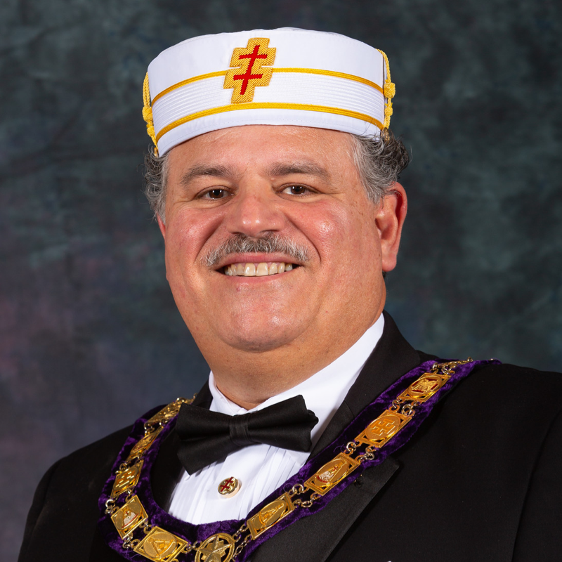
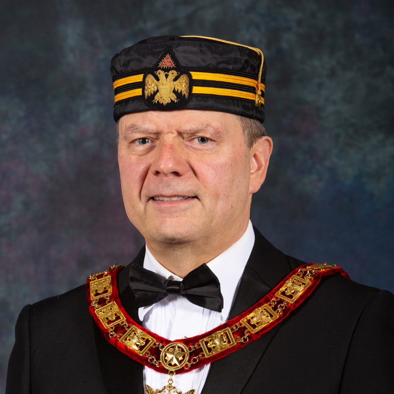
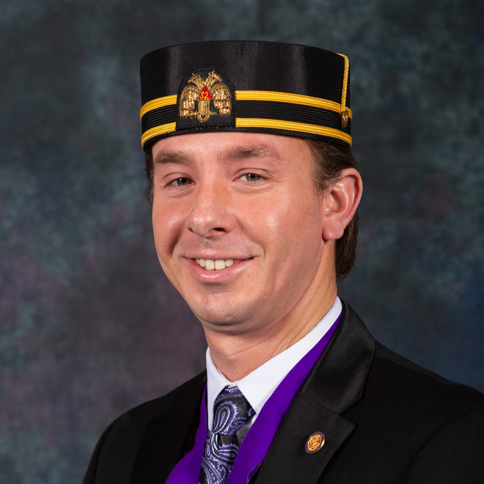
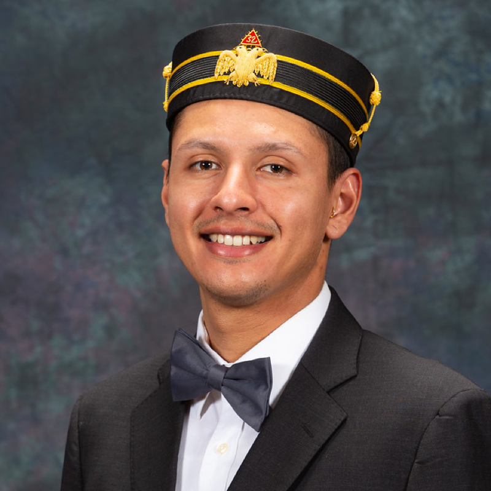

Ill. James D. Cole, 33° Ill. James D. Cole, 33°
Sovereign Grand Commander |
 Ill. Frank Loui, 33° Ill. Frank Loui, 33°
Sovereign Grand Inspector General, Orient of California |
Ill. Francisco Rosario, 33°
Personal Representative of the SGIG, Orient of California
frosario@ocscottishrite.org |
Hon. Jamie Hopkins, 32° KCCH
General Secretary
gensec@ocscottishrite.org |
 Ill. Ralph Shelton, 33° Ill. Ralph Shelton, 33°
Assistant to the Personal Rep
rshelton@ocscottishrite.org |
 Hon. David Frias, 32° KCCH Hon. David Frias, 32° KCCH
Venerable Master
dfrias@ocscottishrite.org |
Brandon Cook, 32°
Wise Master
bcook@ocscottishrite.org |
 Alex Gonzalez, 32° Alex Gonzalez, 32°
Commander of Kadosh
agonzalez@ocscottishrite.org |
Cristian DeDios, 32°
Master of Kadosh
cdedios@ocscottishrite.org |